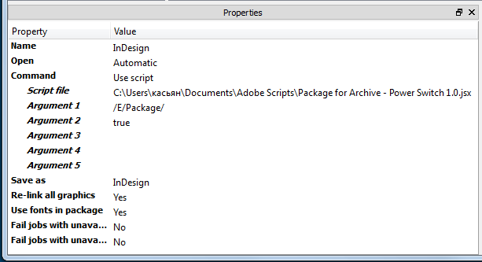
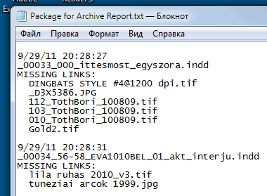
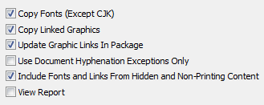
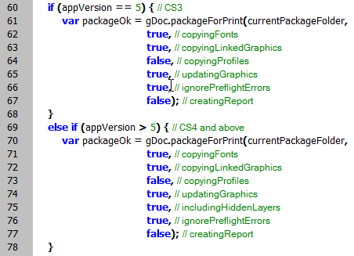

Package for Archive (Power Switch version)
Script for Power Switch 10 and InDesign CS3–5.5 — version 1.1
This is a version of my Package for Archive script which can be attached to InDesign configurator in Enfocus Power Switch.
The script uses two arguments: $arg1 and $arg2.

$arg1 — is required parameter — sets the path to the "main" folder where the files will be packaged
It can be either URI path name like this:
/E/Packages/
or Windows path name like so:
E:\Packages\
Important note:
$arg1 should end with slash or backslash.
$arg2 — is optional — determines whether create the error log on the desktop. It should be set either to true or false. If not set, it's true by default. Currently the script logs two sorts of non-critical errors: when a package for some reason wasn't created and when a document contains missing links.
.

The error log is a simple text file — Package for Archive Report.txt — created on the desktop when the first error occurs.
In InDesign, Package command has a number of parameters:

If necessary, they corresponding parameters in the script can be easily changed:

Note that CS3 and CS4–5.5 use different sets of parameters.
Download the script from here.